Overview
Convolutional codes were introduced in 1955 by Peter Elias, and have become widely used in wireless communication. Despite the fact that they are rapidly losing ground to the more recently proposed turbo codes, they remain an interesting topic to study due to their intuitive nature and historical importance.
Convolutional codes differ from codes that we studied in class
in that they send only the parity bits, where codes
like the Hamming 7,4 had data bits interspersed. Convolutional
codes are defined by three things: a
constraint length,
 ,
an inverse rate,
,
and a collection of
polynomials,
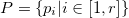.
,
an inverse rate,
,
and a collection of
polynomials,
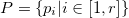.
Encoding
Essentially, the parity bits are encoded by each of the
polynomials acting on a sliding window of
,
bits,
moving along the stream of data until all of the data
has been processed. This is illustrated below.
Encoding With a Sliding Window
In the above example, our constraint length,
,
is 5 and we are encoding with two polynomials:
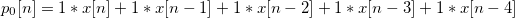, and
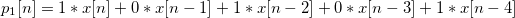
Where
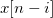
denotes
 bit positions before the position of the right end of the
slider,
.
We start with
four padding bits shown with grey borders. This
ensures that the first collection of encoded bits are
transitioning from the state 00. We will see later how
this helps with decoding. With two polynomials, we would expect
our rate to be 1/2. and indeed the 15 data bits in the example
are encoded as a 30 bit message.
bit positions before the position of the right end of the
slider,
.
We start with
four padding bits shown with grey borders. This
ensures that the first collection of encoded bits are
transitioning from the state 00. We will see later how
this helps with decoding. With two polynomials, we would expect
our rate to be 1/2. and indeed the 15 data bits in the example
are encoded as a 30 bit message.
Generally speaking, the longer the constraint length (sometimes called the window size), the more resilient the code is to bit errors, but also the longer it will take to decode. Similarly, the larger the inverse rate, the more resilient the code will be to bit errors, but also the less efficient the coding will be. These are tradeoffs that need to be balanced based on the specific application.
In the demo below, play around with adjusting the inverse rate, constraint length, and error probability, and observe how the decoding time and resiliency react.
Tuning Parameters
Encoding
time 0:00,
0.0% error
Decoding
time 0:00,
0.0% error
I urge you not to take the absolute speeds too seriously. My javascript implementation of the Viterbi algorithm (to be discussed) leaves a lot to be desired in terms of runtime optimization. The point was rather to convey some intuition about the relationship between the parameters and code performance.
When constructing a convolutional code, the polynomials themselves, not just the number of them, is highly influential to the overall quality of the code. Given a constraint length of 5 and an inverse rate of 3, experiment with different polynomial coefficents and observe the resulting rates. What happens when two polynomials are the same? What about when one of the polynomials is all zero? Why? (You can flip coefficient bits by clicking on them)
The Effect of the Polynomials
Encoding
time 0:00,
0.0% error
Decoding
time 0:00,
0.0% error
As you can see, clearly the choice for polynomials has a significant effect on error correction, but how do we choose good polynomials? Selecting polynomials is outside the scope of our discussion, but a good reference on the subject can be found here.
There are two prevailing ways to visualize convolutional codes: the first is as a block diagram, where one wires together the various "registers" involved with computing each parity bit. The second is as a state machine, where one imagines the encoder as a set of states with well-defined transitions between them, depending on the data that is encountered. An animation of each of these is shown below.
Visualizing the Encoding Process
Both are valid interpretations of the encoding process, but state machines are a particularly useful construct when learning about the decoding process, which we discuss next.
Decoding
To decode a convolutional code is to determine which sequence of data bits were most likely sent given the parity bits that were received. If our problem has a symmetric bit error probability 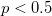, then this amounts to finding the data string whose correct parity bits have the smallest Hamming distance from the bits that were received.
One possible approach to this is brute force: simply enumerate all possible data strings, compute their parity bits, and select the closest one to what you received. Unfortunately, the computational complexity of this is 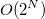, meaning that even for small packets of information, it will be far too slow.
Exponential Complexity
The algorithm used for efficiently decoding convolutional codes was invented by Andrew Viterbi in 1967, although it has been independently discovered at least 7 different times. Its key insight is to aggregate the errors that would have had to occur incrementally while receiving the messages, and discard series as soon as it's clear that they are not the minimum distance.
The data structure used to formalize the decoding problem is called a trellis, which is a special type of graph that arises from state machines. It consists of a collection of nodes for each time step, each with directed edges only to those nodes at the next time step for which they have a possible transition to.
The illustration below is a subgraph of the trellis. The solid edges represent the true state changes, and the dotted edges represent the other state change that was possible if a different bit was encountered by the sliding window at that step. The red corresponds to the parity bits that the encoding system "emits" when encoding the data.
Trellis Generation
Given a received message with errors, the algorithm works by assigning to each state in the next step of the trellis a cost, found by summing the minimum cost to the previous state plus the cost of the transition (the Hamming distance between what was emitted and what was observed). If there are two paths to a particular state, discard the most costly one. This is continued until the end of the received message, and the path to the final state with the least cost is selected. An illustration of this is shown below.
Choose Closest Valid Path
 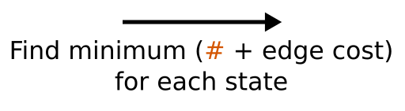
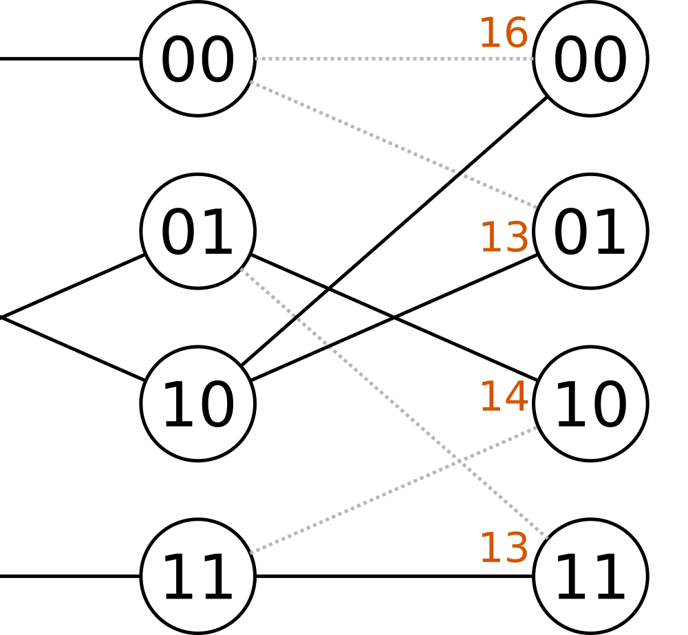
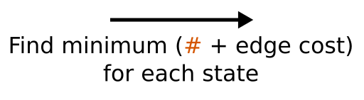
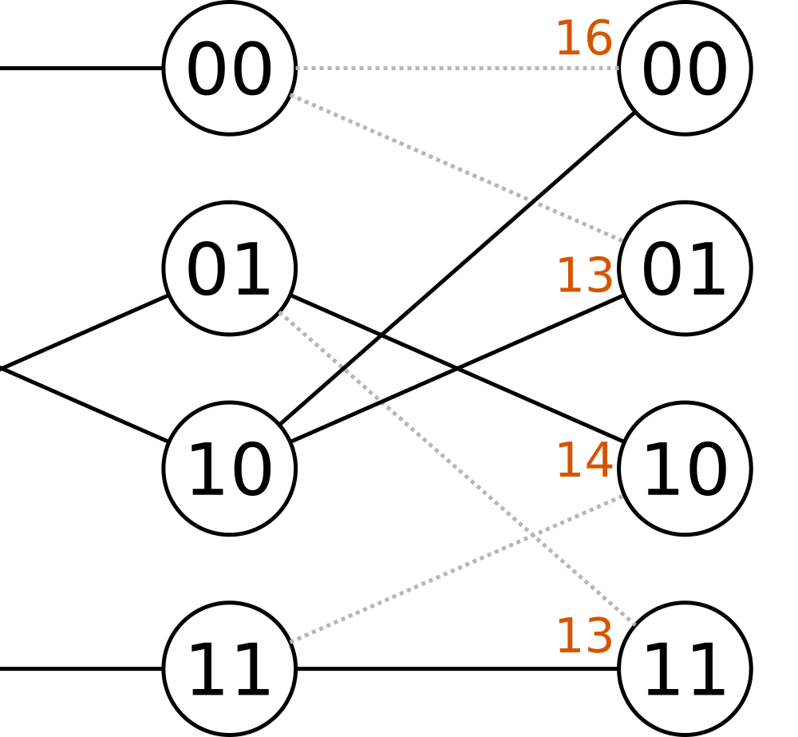
The Viterbi algorithm occupies an important place in signal processing, not just because of its use to decode convolutional codes, but also because it can be used to find maximum-likelihood paths in all sorts of finite state models (e.g. Hidden Markov Models, or soft convolutional codes).
Conclusion
This concludes our discussion of encoding and decoding convolutional codes. As I mentioned in my introduction, turbo codes have started to overtake convolutional codes in everyday use, but convolutional codes occupy and important part of the history of error correcting codes, and they serve as an educational example regarding the importance of fast algorithms to effective technology. Without them, digital communication as we know it would not be possible.
References
La Guardia, Giuliano G. "Convolutional codes: techniques of
construction." Computational and Applied Mathematics
35.2 (2016): 501-517.
Balakrishan, Hari. White, Jacob. "Convolutional Coding"
DRAFT Lecture Notes, MIT 6.02 Fall 2010 (2010): 1-8
Nickerson, Mike. “Exponential Growth.” YouTube,
YouTube, 2 July 2010, www.youtube.com/watch?v=D9DvjkMMULw.